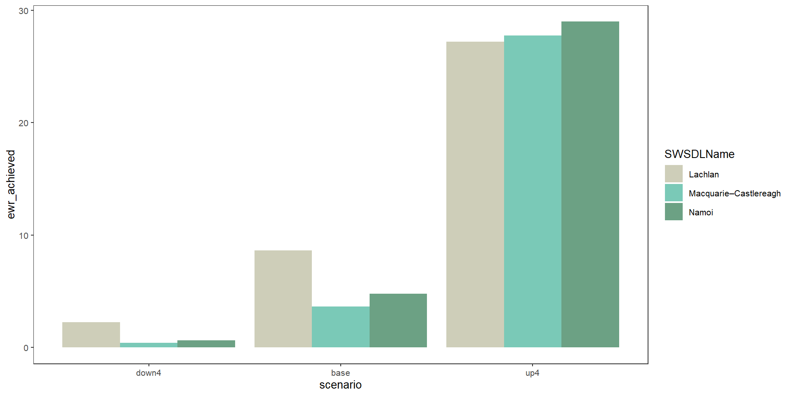

Many options we could set
See options at github pages site for WERP_toolkit_demo
Can run with minimal arguments
Paths to input
Paths to save output
Module arguments (minimal)
Aggregation sequence and functions
# Outer directory for scenario
project_dir = file.path('more_scenarios')
# Hydrographs (expected to exist already)
hydro_dir = file.path(project_dir, 'hydrographs')
# Generated data
# EWR outputs (will be created here in controller, read from here in aggregator)
ewr_results <- file.path(project_dir, 'module_output', 'EWR')
# outputs of aggregator. There may be multiple modules
agg_results <- file.path(project_dir, 'aggregator_output')Sequence of steps
Sequence of functions
aggseq <- list(ewr_code = c('ewr_code_timing', 'ewr_code'),
env_obj = c('ewr_code', "env_obj"),
sdl_units = sdl_units,
Specific_goal = c('env_obj', "Specific_goal"),
catchment = cewo_valleys,
Objective = c('Specific_goal', 'Objective'),
mdb = basin,
target_5_year_2024 = c('Objective', 'target_5_year_2024'))
funseq <- list(c('CompensatingFactor'),
c('ArithmeticMean'),
c('ArithmeticMean'),
c('ArithmeticMean'),
rlang::quo(list(wm = ~weighted.mean(., w = area,
na.rm = TRUE))),
c('ArithmeticMean'),
rlang::quo(list(wm = ~weighted.mean(., w = area,
na.rm = TRUE))),
c('ArithmeticMean'))Typically automatically
Run hydrographs through modules
Aggregate and save responses
Comparisons/analyses
Currently just EWR
Where are hydrographs
Where to save output
Returning instead of saving for presentation
Sequence (levels of each theme, space, time axis)
Aggregation functions at each step
agged_data <- read_and_agg(datpath = ewr_results,
type = 'summary',
geopath = bom_basin_gauges,
causalpath = causal_ewr,
groupers = 'scenario',
aggCols = 'ewr_achieved',
aggsequence = aggseq,
funsequence = funseq,
saveintermediate = TRUE,
namehistory = FALSE,
keepAllPolys = FALSE,
returnList = TRUE,
savepath = NULL)Standardised formats using plot_outcomes function
Different plots for different purposes
Small selection follows
SDL unit differences in all environmental objectives
Change relative to baseline available to all plots
Smoothed fit of all environmental objectives in each group
Flow scaling
Case study
Modules
Aggregation
Azure/large runs
Users/maintainers/builders
Output needs and targets
Links to other programs